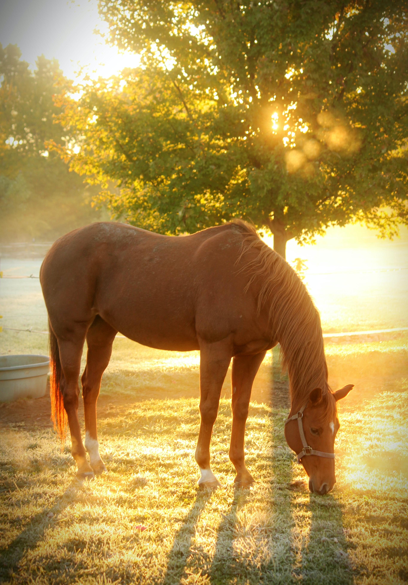

말은 인간에게 중요했던 가축으로, 전 세계에서 널리 사육되고 있다. 고고학적 편년에 따르면 기원전 5000년 전후에 카자흐스탄 북부의 보타이 지역에서 가축화된 것이 최초라고 한다.#[5] 옛날에는 식용으로 사냥의 대상이었으나, 그 후 전쟁이나 밭갈이에 이용되었고[6], 최근에는 주로 스포츠용으로 이용된다. 말을 농경에 이용한다는 부분이 생소할지도 모르지만, 실제로 말은 소에 비해서 순발력이 우수하다.[7] 단 제대로 된 마구가 필요하다. 서양의 경우 중세 초기까지는 목에다가 줄을 거는 식의 마구를 썼는데 이 경우 문제는 어느 정도 이상의 힘이 가해지면 말이 숨을 못쉬어서 제대로 힘을 쓸 수가 없다. 이걸 해소한 것이 가슴에다가 거는 식의 마구인데 동양의 경우 중국 삼국시대~수나라 시기에 개발되어 활용되었다고 하며, 서양에는 9~10세기 쯤에 도입된다.